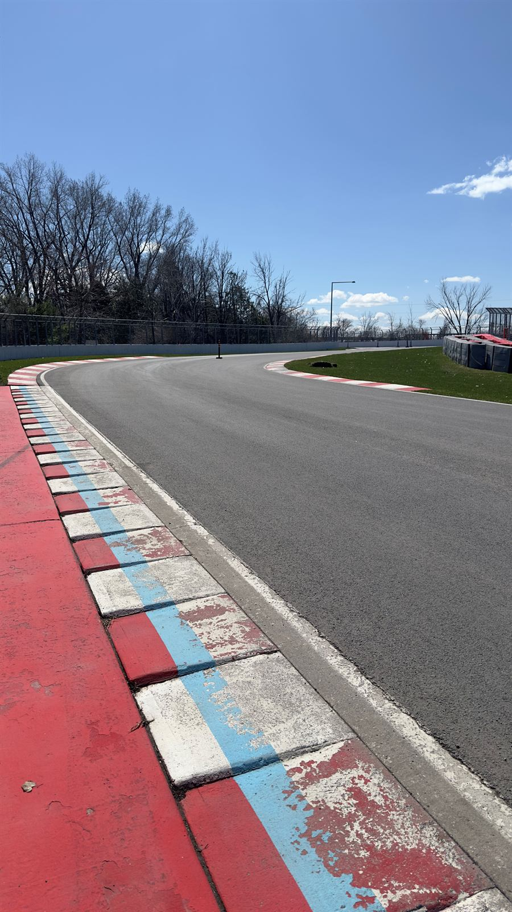
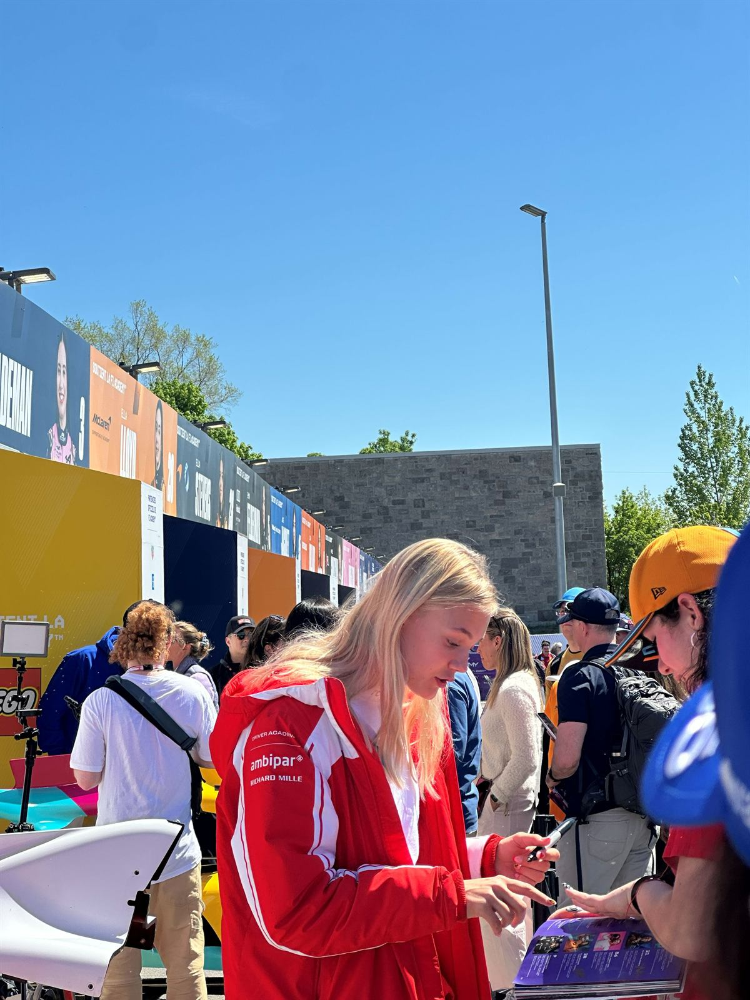
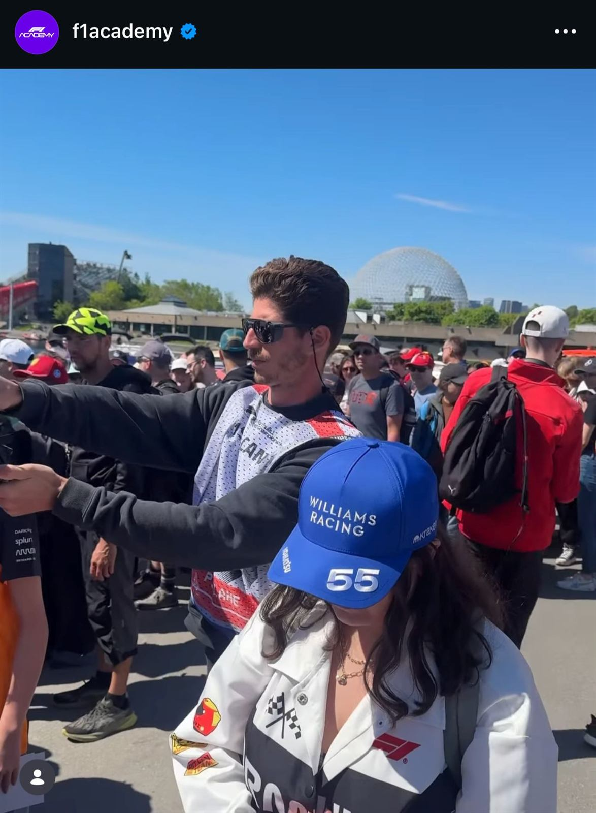
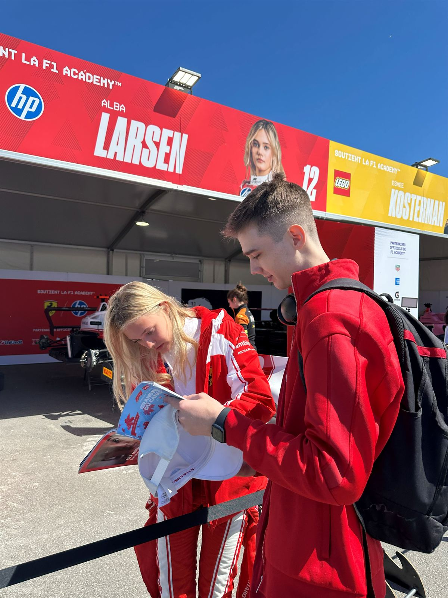
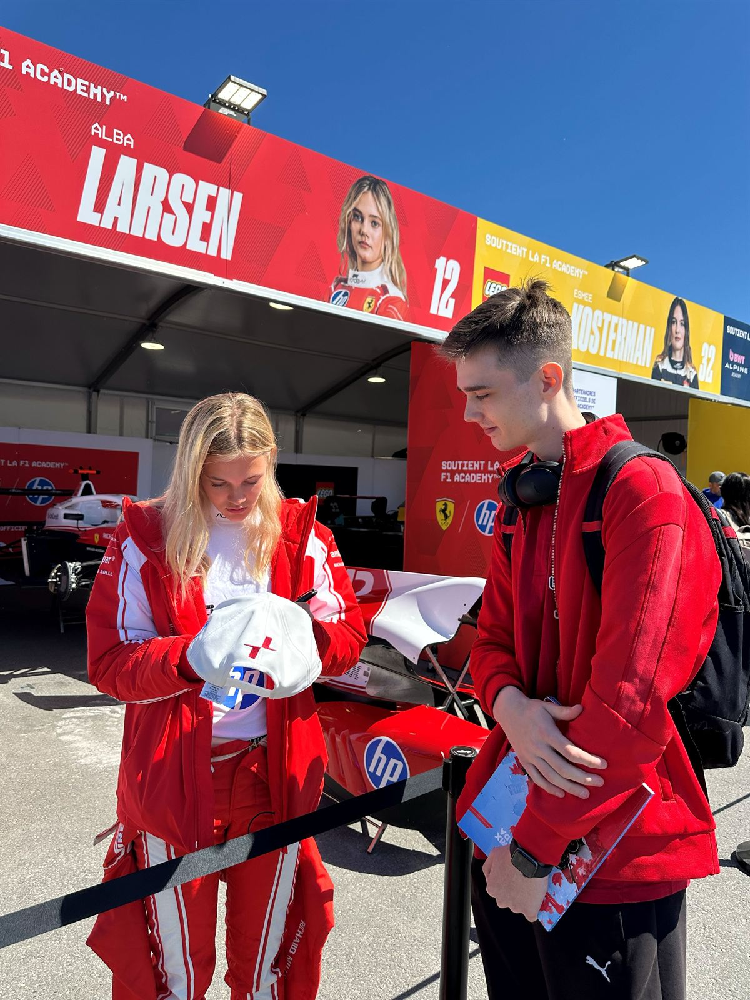
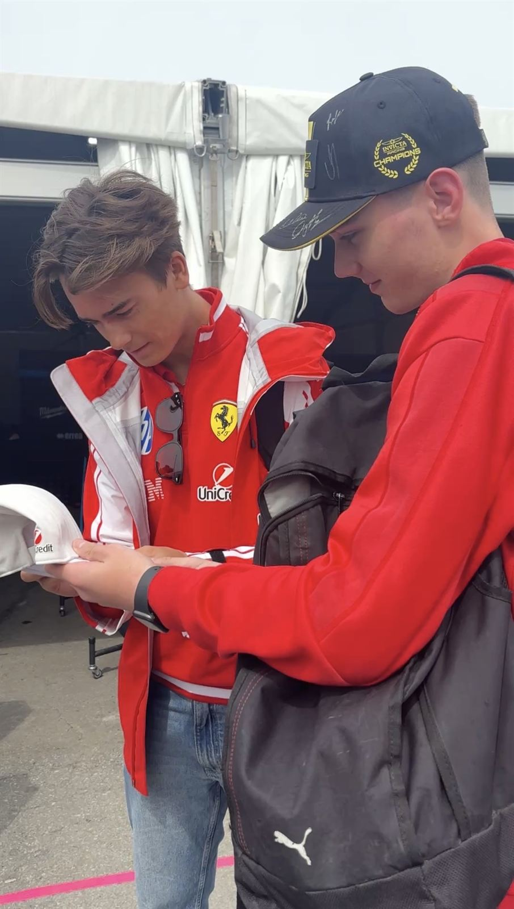
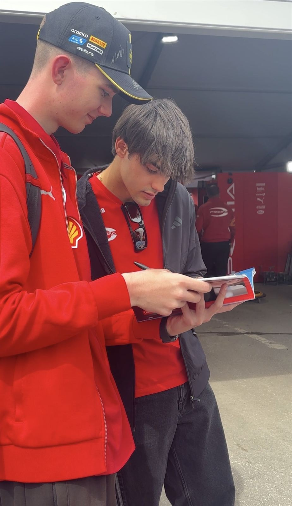
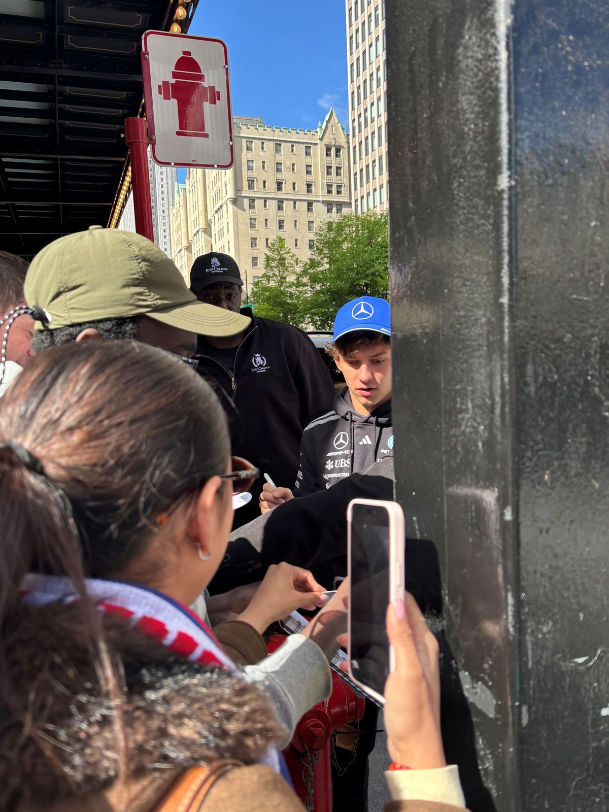
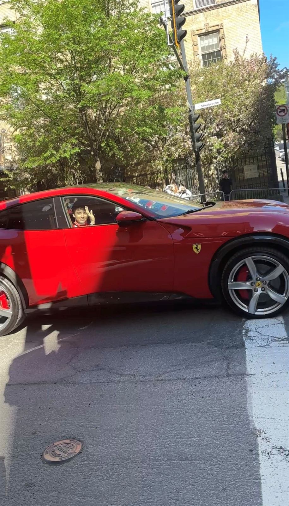
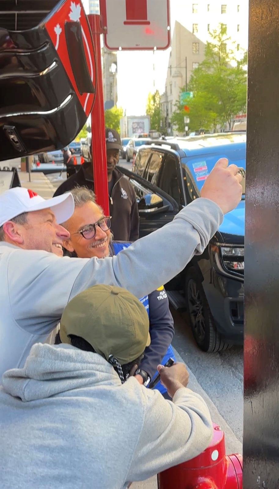

WHY I RACE
Racing isn't just something I do on a screen. It's the sport I grew up loving, and this year I picked it over everything else.
- 0Days walked away from
- 0Signatures in Montreal
- 0Path
01 The question
Talent isn't
the ticket.
In most sports, if you're fast enough, someone notices. In motorsport, fast isn't enough.
Racing is the sport I love, and the hardest one to get into. A seat costs money long before it pays anything back, and plenty of quick drivers never get to find out how good they could be.
I'm not saying that to complain. It's just where I'm starting from: no karting career, no budget, a sim rig and a lot of hours.
02 The decision
Two paths,
one seat.
I walked away from 225 days of building a YouTube channel that was growing. Not because it failed, but because I couldn't give two paths my best.
I'd edit all day, then race with whatever energy was left. Neither one was getting the real me, and I could feel it.
So I picked one: the rig, the kart track and the Road to Racing.
Watch it in Road to Racing · Episode 01 ↗ The channel I stopped225 days of editing, then a choice.
The channel I stopped225 days of editing, then a choice. The one pathThe rig, every evening.
The one pathThe rig, every evening.
03 Canadian Grand Prix · Montreal 2026
From admiring it
to chasing it.
At the 2026 Canadian Grand Prix I got closer than I ever had: the Formula 2 paddock. Rafael Câmara and Dino Beganovic from the Ferrari Driver Academy and Alba Larsen from F1 Academy signed my caps, and Sebastián Montoya signed for me in the Prema paddock.
Seeing it all up close changed something. Racing stopped being something I watched and became something I want to do.
A Weeks before, then the paddock
 Weeks before the GPAn empty pit lane, waiting.
Weeks before the GPAn empty pit lane, waiting.
Circuit Gilles VilleneuveThe curbs, before race weekend.
Alba LarsenF1 Academy, signing in the paddock.
Caught on cameraIn an F1 Academy post: red hoodie, on the right.
B The signatures
-
F2 paddock · Montreal Walking the paddock, close enough to touch the cars.
 F1 Academy · Alba Larsen, #12Cap signed outside Ferrari's F1 Academy garage.
F1 Academy · Alba Larsen, #12Cap signed outside Ferrari's F1 Academy garage.
Pen on the capSigning, right at the barrier.
Number 12Under her own banner.
Dino Beganovic · Ferrari Driver AcademyA white cap, signed by a Ferrari junior.
Sebastián Montoya · PremaSigning in the Prema paddock.
C Around town

Kimi AntonelliA few steps away.
Charles LeclercSpotted in the Ferrari.
Red Bull's team bossAt the drivers' hotel.- Alba Larsen · drivers' hotelShe looked right at my camera: being tall, I was holding it that high.
- Carlos SainzSigning for the fans.
D Race day
- Track invasionWaiting for the gates to open.
- The podiumRace day, from the crowd.
04 Why the sim counts
It isn't just
gaming anymore.
- 01The skills carry overBraking points, tyre wear, racecraft: thousands of laps teach the same things a real car does.
- 02The data doesn't lieEvery lap is measured, so I can see exactly where I'm losing time and fix it.
- 03The pros use it tooReal teams prepare their drivers on simulators. The tool is taken seriously.
The sim is respected. The road from the sim to a real seat still isn't. I'd like my story to help change that.
05 The experiment
No shortcuts.
Just the work.
The Road to Racing is me finding out how far a sim racer can really go, on camera and without a script.
Everything goes on YouTube: the progress, the mistakes and the days when nothing works. If it gets me even part of the way, it shows the sim can be a real place to start.
Most drivers start in a kart. I'm starting with a wheel, a pair of pedals and a lot of late nights.
I don't know how far this goes.
I'm going to find out.